Changes in PRIMAP-hist v2.6.1_final compared to v2.6_final for Kazakhstan
2025-03-19
Johannes Gütschow
Change analysis for Kazakhstan for PRIMAP-hist v2.6.1_final compared to v2.6_final
Overview over emissions by sector and gas
The following figures show the aggregate national total emissions excluding LULUCF AR6GWP100 for the country reported priority scenario. The dotted linesshow the v2.6_final data.
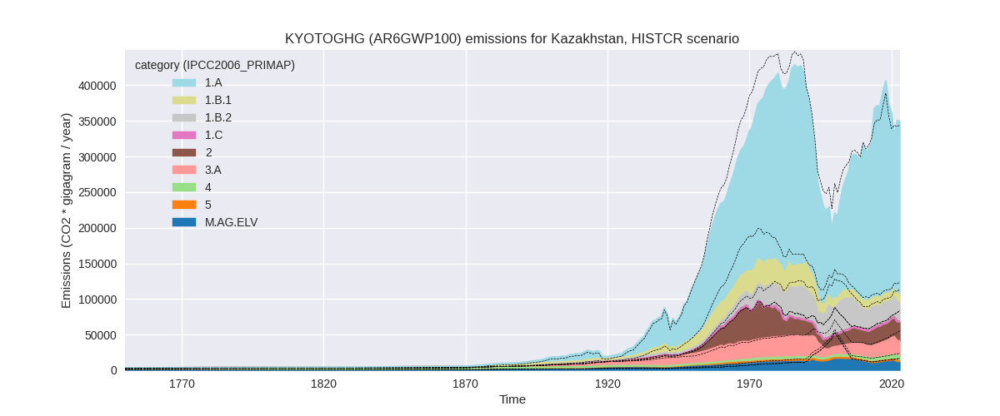
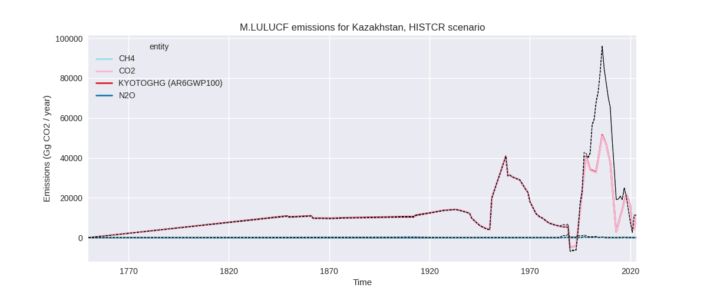
The following figures show the aggregate national total emissions excluding LULUCF AR6GWP100 for the third party priority scenario. The dotted linesshow the v2.6_final data.
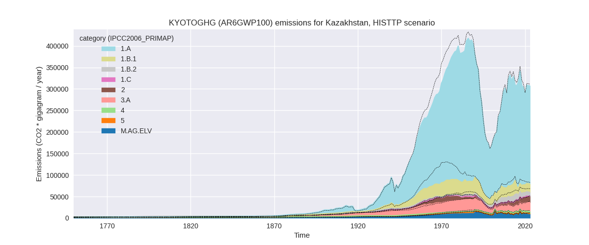
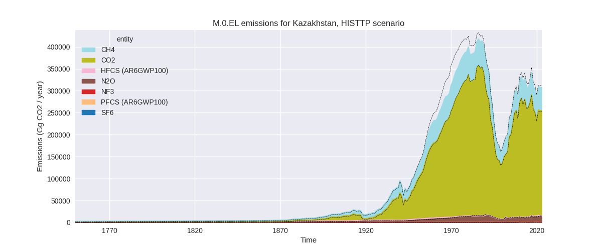
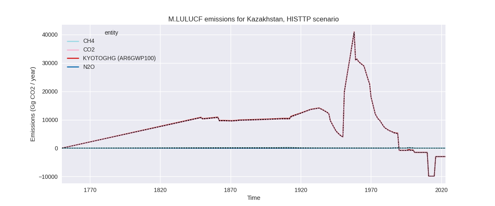
Overview over changes
In the country reported priority scenario we have the following changes for aggregate Kyoto GHG and national total emissions excluding LULUCF (M.0.EL):
- Emissions in 2023 have changed by 1.4%% (4929.19 Gg CO2 / year)
- Emissions in 1990-2023 have changed by -2.5%% (-7840.89 Gg CO2 / year)
In the third party priority scenario we have the following changes for aggregate Kyoto GHG and national total emissions excluding LULUCF (M.0.EL):
- Emissions in 2023 have changed by -1.2%% (-3686.46 Gg CO2 / year)
- Emissions in 1990-2023 have changed by -2.1%% (-5823.98 Gg CO2 / year)
Most important changes per scenario and time frame
In the country reported priority scenario the following sector-gas combinations have the highest absolute impact on national total KyotoGHG (AR6GWP100) emissions in 2023 (top 5):
- 1: 1.A, CO2 with 21678.86 Gg CO2 / year (9.9%)
- 2: 3.A, CH4 with -9347.09 Gg CO2 / year (-32.3%)
- 3: 1.B.2, CH4 with -5592.84 Gg CO2 / year (-23.6%)
- 4: M.AG.ELV, N2O with -4525.74 Gg CO2 / year (-28.5%)
- 5: 1.B.2, CO2 with 1370.99 Gg CO2 / year (21.4%)
In the country reported priority scenario the following sector-gas combinations have the highest absolute impact on national total KyotoGHG (AR6GWP100) emissions in 1990-2023 (top 5):
- 1: M.AG.ELV, N2O with -8615.50 Gg CO2 / year (-39.7%)
- 2: 1.A, CO2 with 5600.42 Gg CO2 / year (2.9%)
- 3: 3.A, CH4 with -3084.64 Gg CO2 / year (-15.5%)
- 4: 1.B.2, CH4 with -2353.79 Gg CO2 / year (-8.3%)
- 5: 5, N2O with 1010.08 Gg CO2 / year (inf%)
In the third party priority scenario the following sector-gas combinations have the highest absolute impact on national total KyotoGHG (AR6GWP100) emissions in 2023 (top 5):
- 1: 1.B.2, CH4 with -8011.25 Gg CO2 / year (-54.2%)
- 2: 1.B.1, CH4 with 4752.42 Gg CO2 / year (33.7%)
- 3: 2, HFCS (AR6GWP100) with 2198.20 Gg CO2 / year (169.9%)
- 4: M.AG.ELV, N2O with -979.57 Gg CO2 / year (-11.1%)
- 5: M.AG.ELV, CH4 with -938.54 Gg CO2 / year (-39.7%)
In the third party priority scenario the following sector-gas combinations have the highest absolute impact on national total KyotoGHG (AR6GWP100) emissions in 1990-2023 (top 5):
- 1: 1.B.2, CH4 with -6392.89 Gg CO2 / year (-56.9%)
- 2: 1.B.1, CH4 with 523.14 Gg CO2 / year (2.7%)
- 3: 2, HFCS (AR6GWP100) with 439.51 Gg CO2 / year (63.3%)
- 4: 4, CH4 with -179.41 Gg CO2 / year (-4.8%)
- 5: 5, N2O with -116.84 Gg CO2 / year (-10.4%)
Notes on data changes
Here we list notes explaining important emissions changes for the country.
- CRT data from BTR1 has been added. Total emissions changes for 2023 are small in the CR scenario because several large changes cancel. Time-series for several sector and gases have been updated for all years in BTR1.
- In the TP time-series the main changes are from fugitive emissions, HFCs (all because of new EDGAR data) and for 2023 also agricultural emissions where FAO data shows a decline in M.AG.ELV for 2022.
TODO: lower emissions BTR1?
Changes by sector and gas
For each scenario and time frame the changes are displayed for all individual sectors and all individual gases. In the sector plot we use aggregate Kyoto GHGs in AR6GWP100. In the gas plot we usenational total emissions without LULUCF.
country reported scenario
2023
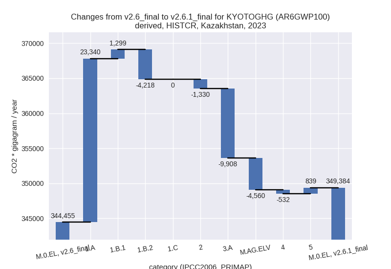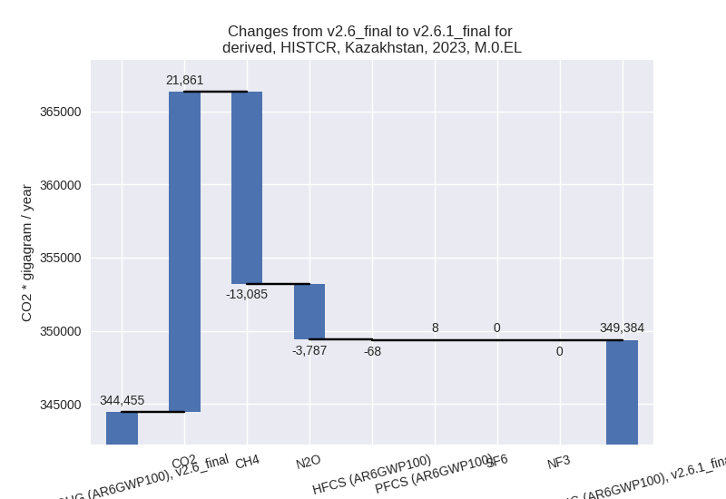
1990-2023
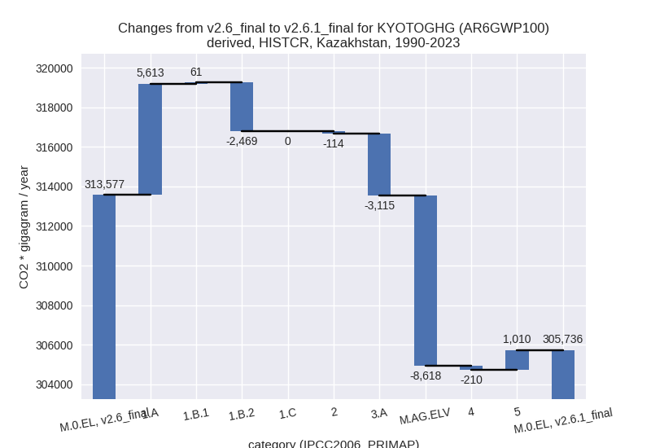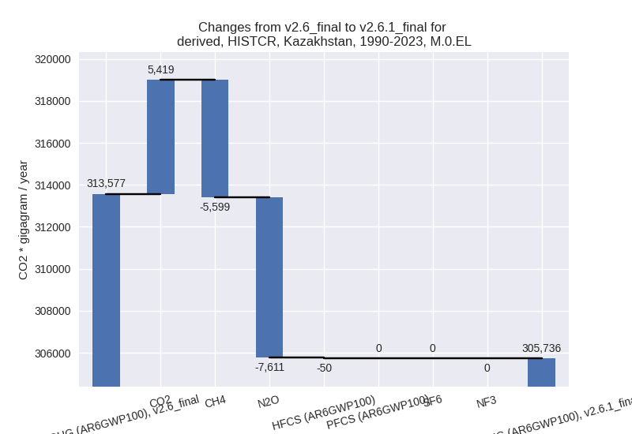
third party scenario
2023
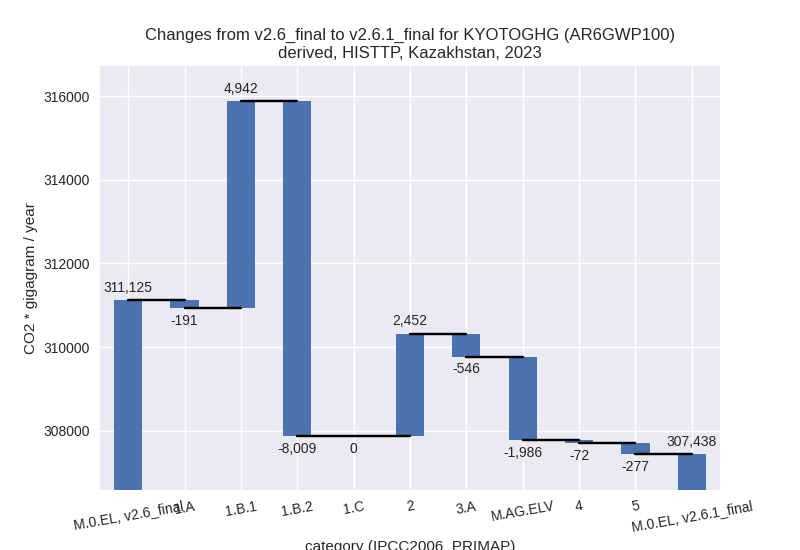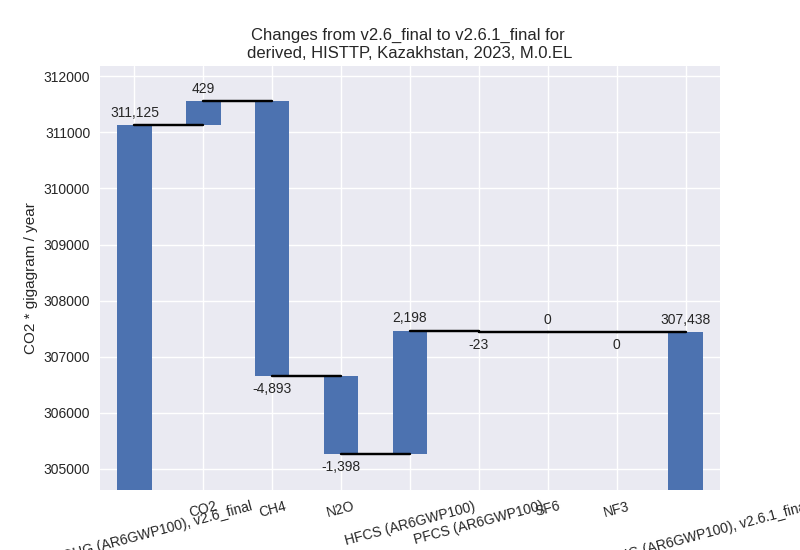
1990-2023
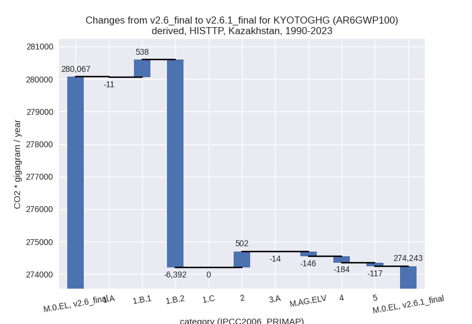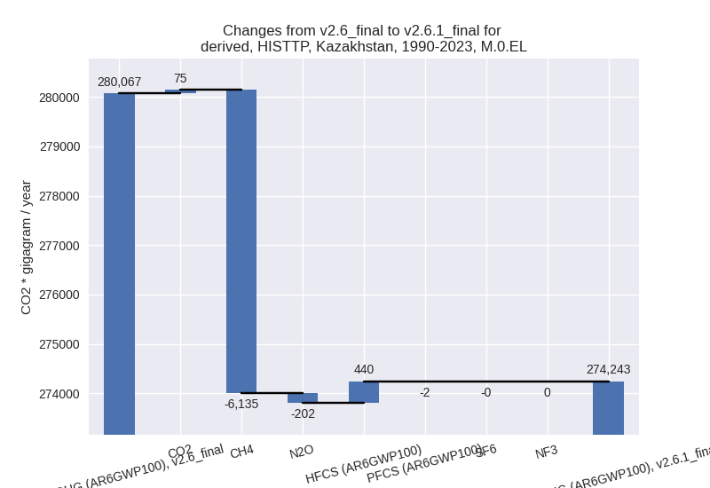
Detailed changes for the scenarios:
country reported scenario (HISTCR):
Most important changes per time frame
For 2023 the following sector-gas combinations have the highest absolute impact on national total KyotoGHG (AR6GWP100) emissions in 2023 (top 5):
- 1: 1.A, CO2 with 21678.86 Gg CO2 / year (9.9%)
- 2: 3.A, CH4 with -9347.09 Gg CO2 / year (-32.3%)
- 3: 1.B.2, CH4 with -5592.84 Gg CO2 / year (-23.6%)
- 4: M.AG.ELV, N2O with -4525.74 Gg CO2 / year (-28.5%)
- 5: 1.B.2, CO2 with 1370.99 Gg CO2 / year (21.4%)
For 1990-2023 the following sector-gas combinations have the highest absolute impact on national total KyotoGHG (AR6GWP100) emissions in 1990-2023 (top 5):
- 1: M.AG.ELV, N2O with -8615.50 Gg CO2 / year (-39.7%)
- 2: 1.A, CO2 with 5600.42 Gg CO2 / year (2.9%)
- 3: 3.A, CH4 with -3084.64 Gg CO2 / year (-15.5%)
- 4: 1.B.2, CH4 with -2353.79 Gg CO2 / year (-8.3%)
- 5: 5, N2O with 1010.08 Gg CO2 / year (inf%)
Changes in the main sectors for aggregate KyotoGHG (AR6GWP100) are
- 1: Total sectoral emissions in 2022 are 281858.05
Gg CO2 / year which is 80.4% of M.0.EL emissions. 2023 Emissions have
changed by 7.8% (20421.04 Gg CO2 /
year). 1990-2023 Emissions have changed by 1.3% (3205.60 Gg CO2 / year). For 2023 the
changes per gas
are:
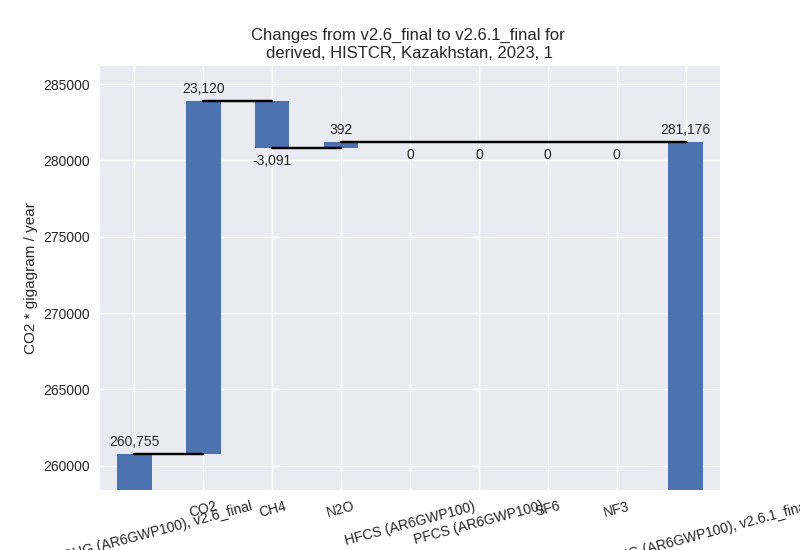
The changes come from the following subsectors:- 1.A: Total sectoral emissions in 2022 are 243493.16
Gg CO2 / year which is 86.4% of category 1 emissions. 2023 Emissions
have changed by 10.6% (23339.87 Gg
CO2 / year). 1990-2023 Emissions have changed by 2.9% (5613.01 Gg CO2 / year). For 2023 the
changes per gas
are:
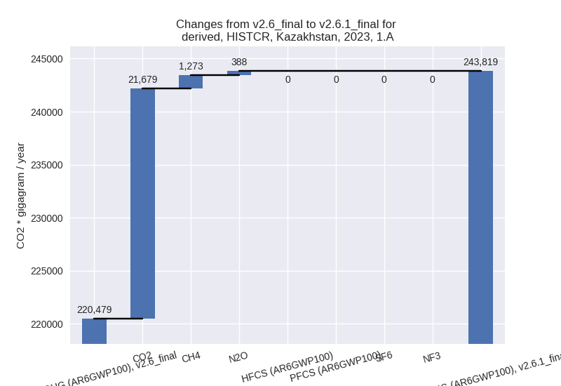
For 1990-2023 the changes per gas are:
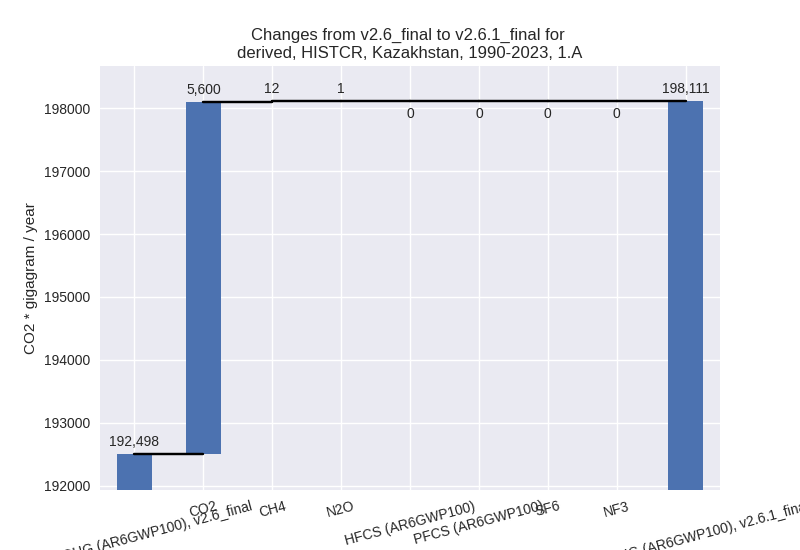
There is no subsector information available in PRIMAP-hist. - 1.B.1: Total sectoral emissions in 2022 are
11560.90 Gg CO2 / year which is 4.1% of category 1 emissions. 2023
Emissions have changed by 12.8%
(1299.29 Gg CO2 / year). 1990-2023 Emissions have changed by 0.4% (61.34 Gg CO2 / year). For 2023 the
changes per gas
are:
There is no subsector information available in PRIMAP-hist. - 1.B.2: Total sectoral emissions in 2022 are
26804.00 Gg CO2 / year which is 9.5% of category 1 emissions. 2023
Emissions have changed by -14.0%
(-4218.12 Gg CO2 / year). 1990-2023 Emissions have changed by -6.7% (-2468.75 Gg CO2 / year). For 2023
the changes per gas
are:
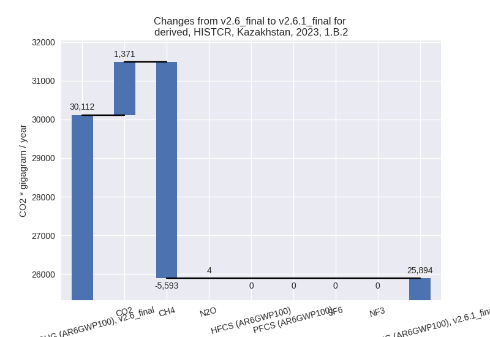
For 1990-2023 the changes per gas are:
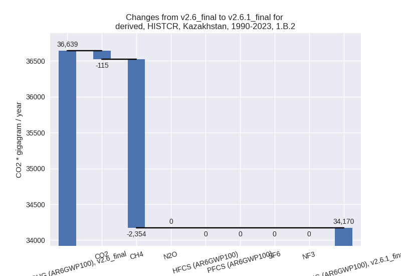
There is no subsector information available in PRIMAP-hist.
- 1.A: Total sectoral emissions in 2022 are 243493.16
Gg CO2 / year which is 86.4% of category 1 emissions. 2023 Emissions
have changed by 10.6% (23339.87 Gg
CO2 / year). 1990-2023 Emissions have changed by 2.9% (5613.01 Gg CO2 / year). For 2023 the
changes per gas
are:
- 2: Total sectoral emissions in 2022 are 27505.95 Gg
CO2 / year which is 7.8% of M.0.EL emissions. 2023 Emissions have
changed by -4.7% (-1329.94 Gg CO2 /
year). 1990-2023 Emissions have changed by -0.5% (-113.79 Gg CO2 / year). For 2023
the changes per gas
are:
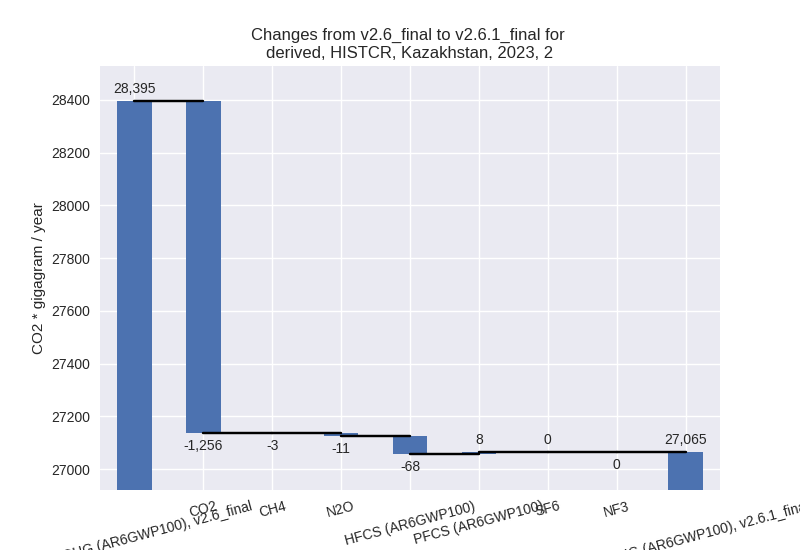 - M.AG: Total sectoral emissions in 2022 are 33320.36
Gg CO2 / year which is 9.5% of M.0.EL emissions. 2023 Emissions have
changed by -30.2% (-14468.19 Gg CO2
/ year). 1990-2023 Emissions have changed by -26.7% (-11733.18 Gg CO2 / year). For 2023
the changes per gas
are:
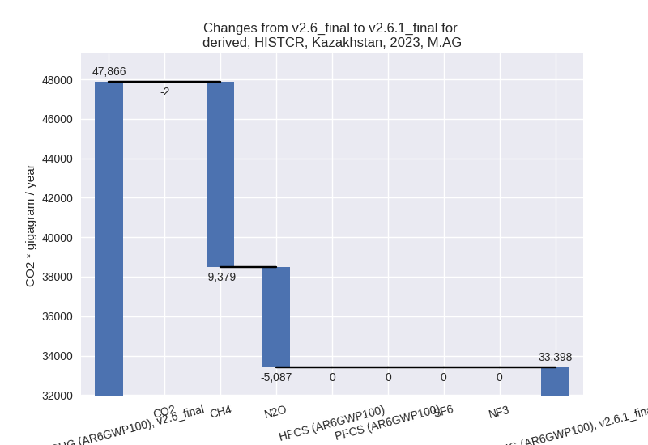
For 1990-2023 the changes per gas are:
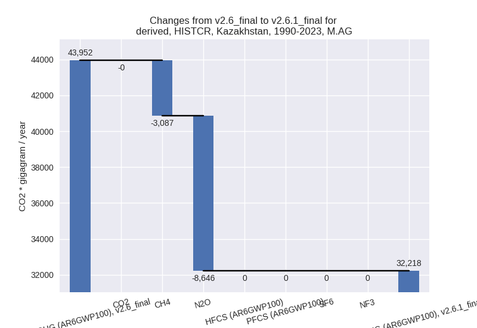
The changes come from the following subsectors:- 3.A: Total sectoral emissions in 2022 are 21244.24
Gg CO2 / year which is 63.8% of category M.AG emissions. 2023 Emissions
have changed by -31.5% (-9907.98 Gg
CO2 / year). 1990-2023 Emissions have changed by -14.4% (-3115.11 Gg CO2 / year). For 2023
the changes per gas
are:
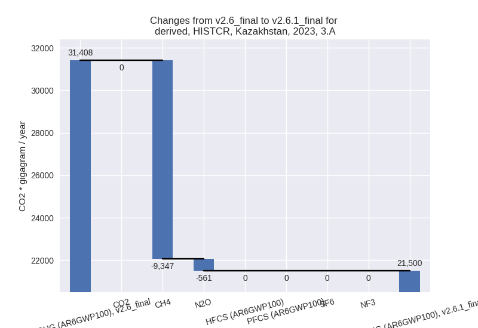
For 1990-2023 the changes per gas are:
There is no subsector information available in PRIMAP-hist. - M.AG.ELV: Total sectoral emissions in 2022 are
12076.12 Gg CO2 / year which is 36.2% of category M.AG emissions. 2023
Emissions have changed by -27.7%
(-4560.21 Gg CO2 / year). 1990-2023 Emissions have changed by -38.7% (-8618.07 Gg CO2 / year). For 2023
the changes per gas
are:
For 1990-2023 the changes per gas are:
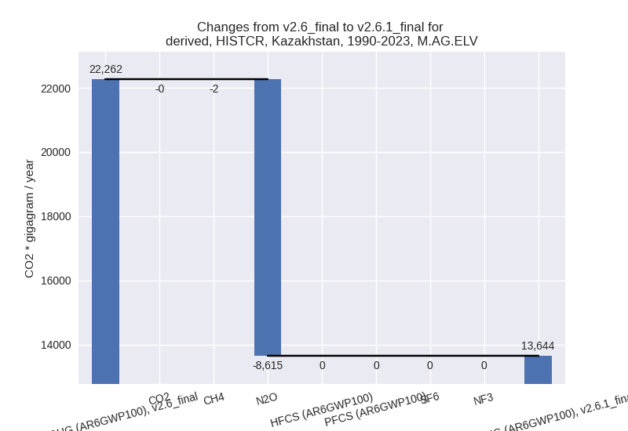
There is no subsector information available in PRIMAP-hist.
- 3.A: Total sectoral emissions in 2022 are 21244.24
Gg CO2 / year which is 63.8% of category M.AG emissions. 2023 Emissions
have changed by -31.5% (-9907.98 Gg
CO2 / year). 1990-2023 Emissions have changed by -14.4% (-3115.11 Gg CO2 / year). For 2023
the changes per gas
are:
- 4: Total sectoral emissions in 2022 are 6906.45 Gg
CO2 / year which is 2.0% of M.0.EL emissions. 2023 Emissions have
changed by -7.2% (-532.28 Gg CO2 /
year). 1990-2023 Emissions have changed by -4.4% (-209.59 Gg CO2 / year). For 2023
the changes per gas
are:
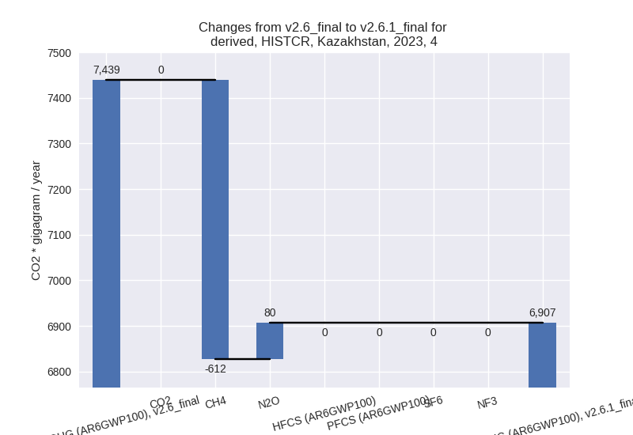
For 1990-2023 the changes per gas are:
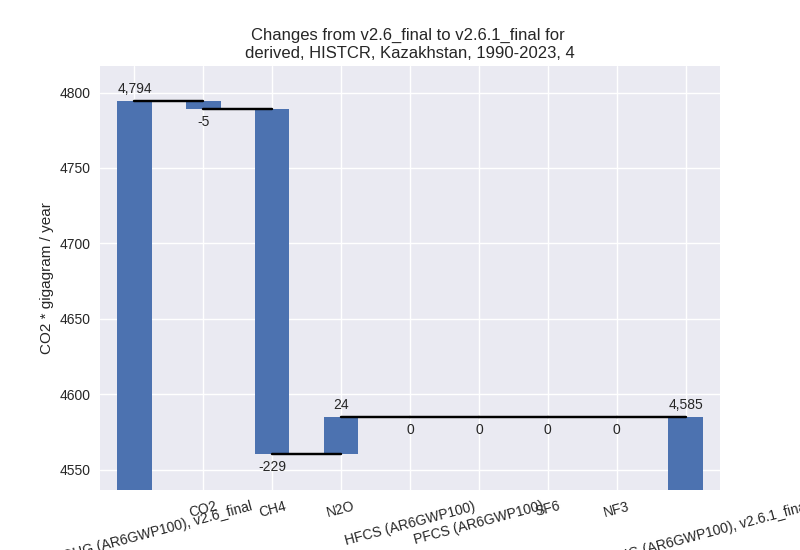 - 5: Total sectoral emissions in 2022 are 854.39 Gg
CO2 / year which is 0.2% of M.0.EL emissions. 2023 Emissions have
changed by inf% (838.55 Gg CO2 /
year). 1990-2023 Emissions have changed by inf% (1010.08 Gg CO2 / year). For 2023 the
changes per gas
are:
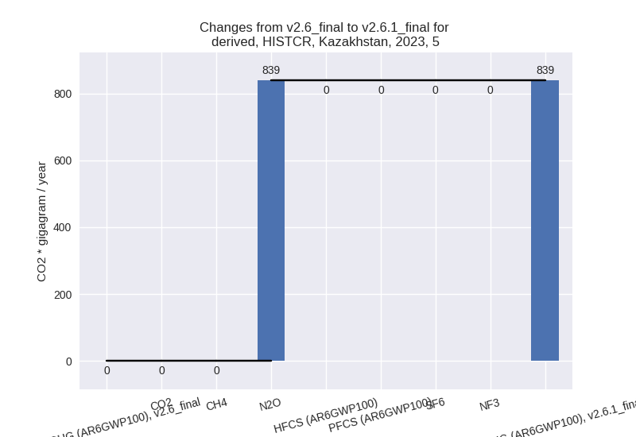
For 1990-2023 the changes per gas are:
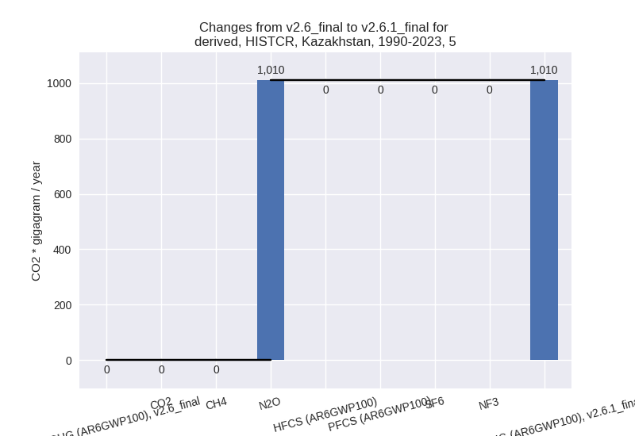
third party scenario (HISTTP):
Most important changes per time frame
For 2023 the following sector-gas combinations have the highest absolute impact on national total KyotoGHG (AR6GWP100) emissions in 2023 (top 5):
- 1: 1.B.2, CH4 with -8011.25 Gg CO2 / year (-54.2%)
- 2: 1.B.1, CH4 with 4752.42 Gg CO2 / year (33.7%)
- 3: 2, HFCS (AR6GWP100) with 2198.20 Gg CO2 / year (169.9%)
- 4: M.AG.ELV, N2O with -979.57 Gg CO2 / year (-11.1%)
- 5: M.AG.ELV, CH4 with -938.54 Gg CO2 / year (-39.7%)
For 1990-2023 the following sector-gas combinations have the highest absolute impact on national total KyotoGHG (AR6GWP100) emissions in 1990-2023 (top 5):
- 1: 1.B.2, CH4 with -6392.89 Gg CO2 / year (-56.9%)
- 2: 1.B.1, CH4 with 523.14 Gg CO2 / year (2.7%)
- 3: 2, HFCS (AR6GWP100) with 439.51 Gg CO2 / year (63.3%)
- 4: 4, CH4 with -179.41 Gg CO2 / year (-4.8%)
- 5: 5, N2O with -116.84 Gg CO2 / year (-10.4%)
Changes in the main sectors for aggregate KyotoGHG (AR6GWP100) are
- 1: Total sectoral emissions in 2022 are 256639.87
Gg CO2 / year which is 83.4% of M.0.EL emissions. 2023 Emissions have
changed by -1.3% (-3257.39 Gg CO2 /
year). 1990-2023 Emissions have changed by -2.4% (-5864.81 Gg CO2 / year). For
1990-2023 the changes per gas
are:
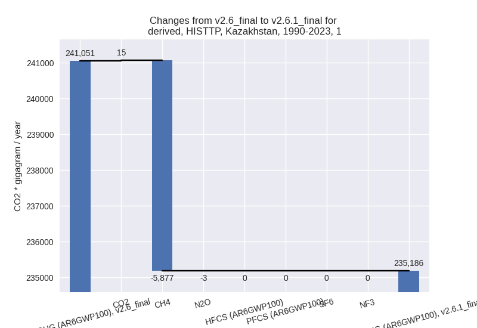
The changes come from the following subsectors:- 1.A: Total sectoral emissions in 2022 are 228041.37 Gg CO2 / year which is 88.9% of category 1 emissions. 2023 Emissions have changed by -0.1% (-190.94 Gg CO2 / year). 1990-2023 Emissions have changed by -0.0% (-11.17 Gg CO2 / year).
- 1.B.1: Total sectoral emissions in 2022 are
19475.31 Gg CO2 / year which is 7.6% of category 1 emissions. 2023
Emissions have changed by 34.5%
(4942.41 Gg CO2 / year). 1990-2023 Emissions have changed by 2.4% (538.14 Gg CO2 / year). For 2023 the
changes per gas
are:
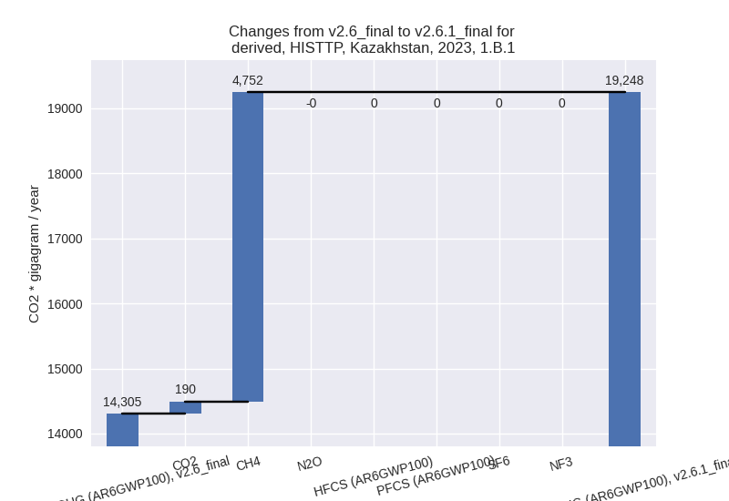
For 1990-2023 the changes per gas are:
There is no subsector information available in PRIMAP-hist. - 1.B.2: Total sectoral emissions in 2022 are 9123.19
Gg CO2 / year which is 3.6% of category 1 emissions. 2023 Emissions have
changed by -47.7% (-8008.87 Gg CO2 /
year). 1990-2023 Emissions have changed by -43.7% (-6391.78 Gg CO2 / year). For 2023
the changes per gas
are:
For 1990-2023 the changes per gas are:
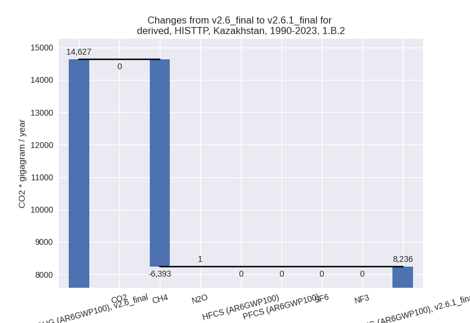
There is no subsector information available in PRIMAP-hist.
- 2: Total sectoral emissions in 2022 are 14837.88 Gg
CO2 / year which is 4.8% of M.0.EL emissions. 2023 Emissions have
changed by 19.8% (2452.27 Gg CO2 /
year). 1990-2023 Emissions have changed by 7.1% (501.74 Gg CO2 / year). For 2023 the
changes per gas
are:
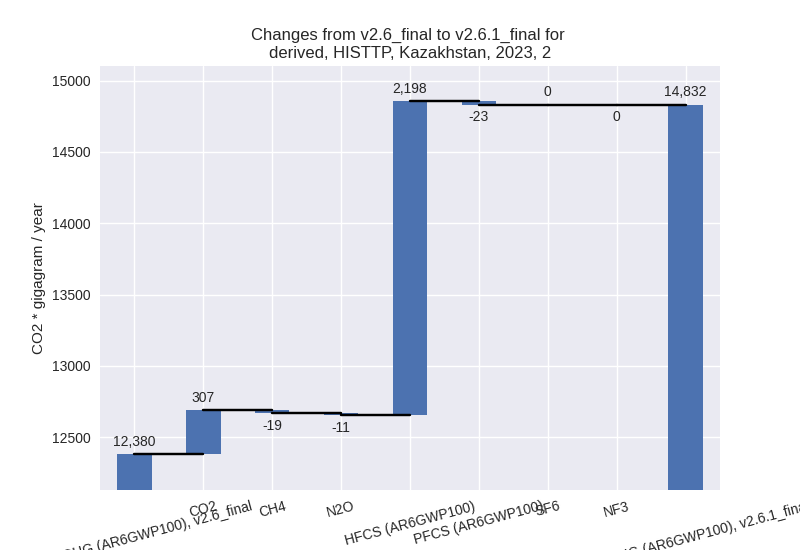
For 1990-2023 the changes per gas are:
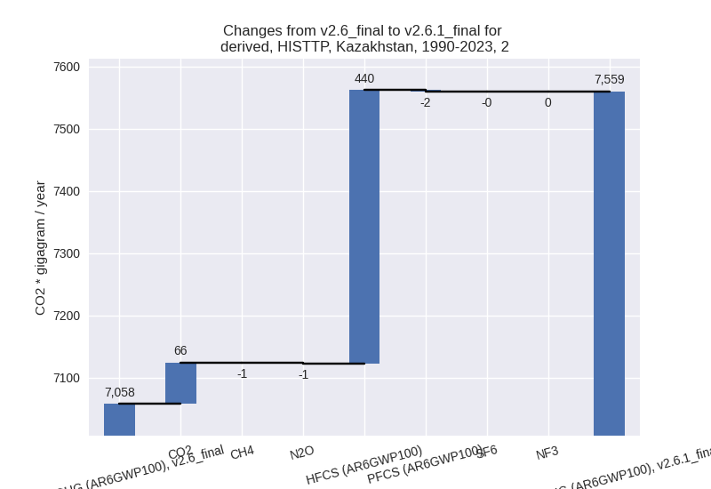 - M.AG: Total sectoral emissions in 2022 are 30480.64
Gg CO2 / year which is 9.9% of M.0.EL emissions. 2023 Emissions have
changed by -7.6% (-2532.01 Gg CO2 /
year). 1990-2023 Emissions have changed by -0.6% (-159.93 Gg CO2 / year). For 2023
the changes per gas
are:
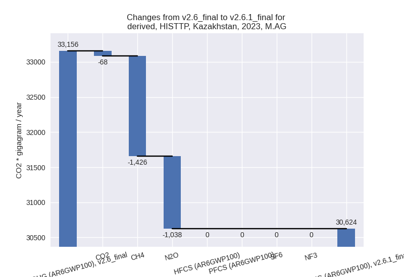
The changes come from the following subsectors:- 3.A: Total sectoral emissions in 2022 are 20628.47
Gg CO2 / year which is 67.7% of category M.AG emissions. 2023 Emissions
have changed by -2.5% (-545.77 Gg
CO2 / year). 1990-2023 Emissions have changed by -0.1% (-13.75 Gg CO2 / year). For 2023 the
changes per gas
are:
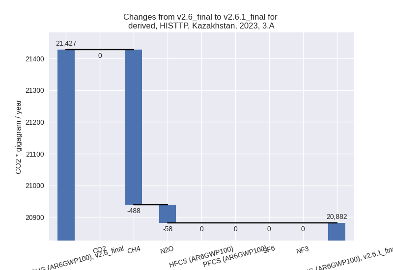
There is no subsector information available in PRIMAP-hist. - M.AG.ELV: Total sectoral emissions in 2022 are
9852.16 Gg CO2 / year which is 32.3% of category M.AG emissions. 2023
Emissions have changed by -16.9%
(-1986.25 Gg CO2 / year). 1990-2023 Emissions have changed by -1.4% (-146.17 Gg CO2 / year). For 2023
the changes per gas
are:
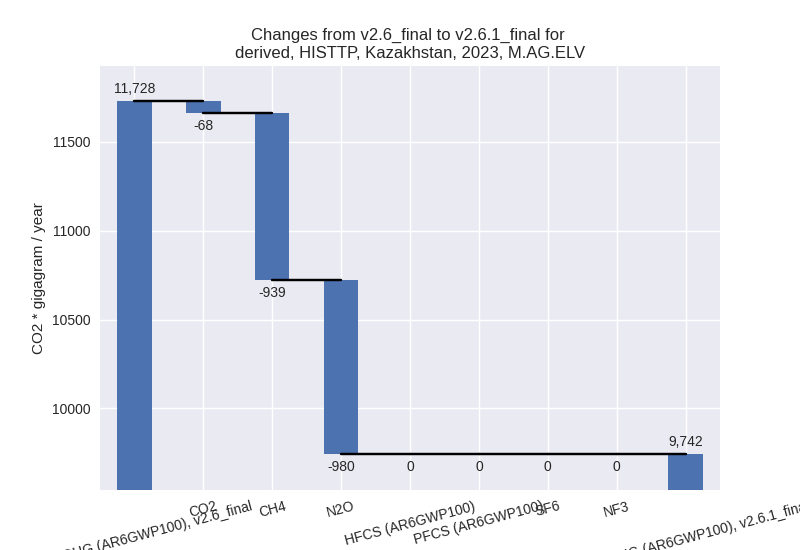
There is no subsector information available in PRIMAP-hist.
- 3.A: Total sectoral emissions in 2022 are 20628.47
Gg CO2 / year which is 67.7% of category M.AG emissions. 2023 Emissions
have changed by -2.5% (-545.77 Gg
CO2 / year). 1990-2023 Emissions have changed by -0.1% (-13.75 Gg CO2 / year). For 2023 the
changes per gas
are:
- 4: Total sectoral emissions in 2022 are 4761.15 Gg
CO2 / year which is 1.5% of M.0.EL emissions. 2023 Emissions have
changed by -1.5% (-72.44 Gg CO2 /
year). 1990-2023 Emissions have changed by -4.6% (-184.14 Gg CO2 / year). For
1990-2023 the changes per gas
are:
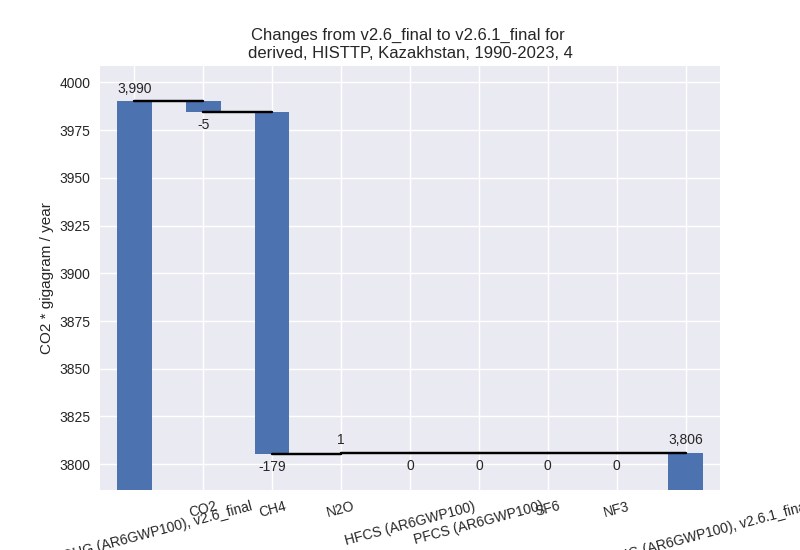 - 5: Total sectoral emissions in 2022 are 854.39 Gg
CO2 / year which is 0.3% of M.0.EL emissions. 2023 Emissions have
changed by -24.8% (-276.88 Gg CO2 /
year). 1990-2023 Emissions have changed by -10.4% (-116.84 Gg CO2 / year). For 2023
the changes per gas
are:
For 1990-2023 the changes per gas are: